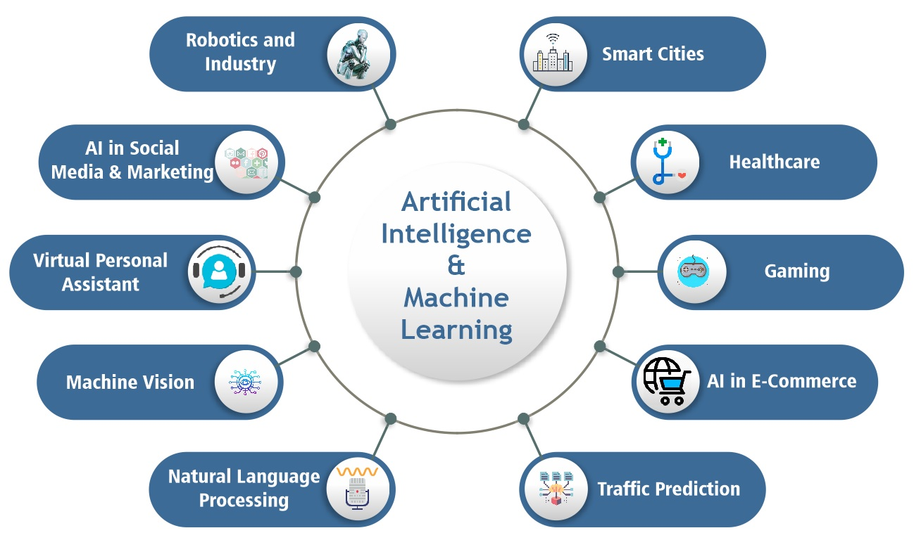

Course Overview
Unleash your career potential with our AI ML courses. Tailored for diverse industries & roles at top global firms, our AI and ML courses feature key tools. Enhance your AI knowledge & business acumen. Join the job market, and become a sought-after professional!.
Curriculum
- Many companies will market their systems or services as “powered by AI” when it's not often the case. We will always find these instances of gimmicky marketing, so it is helpful to first understand what is AI and ML, and the different terms, as there are many relevant use cases of AI and ML in our world today.
- Artificial Intelligence is a technique for building systems that mimic human behavior or decision-making. Machine Learning is a subset of AI that uses data to solve tasks. These solvers are trained models of data that learn based on the information provided to them. This information is derived from probability theory and linear algebra. ML algorithms use our data to learn and automatically solve predictive tasks. Deep Learning is a subset of machine learning which relies on multilayered neural networks to solve these tasks.
- In supervised machine learning, we know about the data and the problem. Think of it as, “given a set of features x, we know the value of y,” and so in supervised learning, we create a function that approximates results based on some set of data. There are two kinds of supervised learning: classification and regression. In a classification problem, we assign data to categories. For example, given a client’s medical information, they test positive or negative for diabetes. In classifications, our trained models, known as classifiers, classify data points into different groups. If we instead wanted to solve a different problem, like predicting the future value of GameStop stock given the stock market history, we'd turn to a regression. In regression, we return numerical values. Given some sentences, this is the percent likelihood the person is happy or sad.
- In unsupervised machine learning, our data is unlabelled. There are two forms of unsupervised machine learning: clustering and dimension reduction. In clustering, we learn more about data points as they are clustered, or grouped together. This allows learned models to understand a data set, detect anomalies, and assign relationships between points, often allowing users to develop new categories or features about the data set. In dimension reduction, we plot data points across different dimensions and feature sets to understand our data sets. This allows for techniques like feature selection or transformation. Dimension reduction solves the curse of dimensionality. The more features to a data set, the more data is needed, and processing many noisy features can impact the performance of an ML model, so unsupervised machine learning techniques are often paired with supervised or reinforcement learning algorithms.
- In reinforcement learning (RL), we are learning models over time. A common technique is to utilize deep learning with reinforcement learning to derive relationships between features of a data set that may not otherwise be solved through human research. Deep learning RL has been very successful in the field of medicine as of late.
Pricing Plans
| Plan | Features | Price |
|---|---|---|
| Basic | Access to course materials | $49 |
| Pro | Materials + Live Sessions | $99 |
Eligibility Criteria
To enroll in the Advance Program in Artificial Intelligence and Machine Learning, applicants must meet the following eligibility criteria:
- Basic knowledge of programming languages such as Python or Java.
- A degree in Computer Science, Engineering, or a related field.
- Familiarity with mathematics, particularly in areas such as linear algebra and statistics.
- A passion for learning and a strong interest in AI and ML technologies.
- Previous experience in data analysis or machine learning projects is a plus.
Course Syllabus
The Advance Program in Artificial Intelligence and Machine Learning covers a comprehensive range of topics designed to equip students with the necessary skills and knowledge. Below is an outline of the key topics that will be covered throughout the course:
- Introduction to Artificial Intelligence and Machine Learning
- Data Preprocessing and Cleaning
- Supervised Learning Techniques
- Unsupervised Learning Techniques
- Deep Learning and Neural Networks
- Natural Language Processing
- Model Evaluation and Validation
- Deployment of Machine Learning Models
- Ethics in AI and ML
- Capstone Project: Real-world Application of AI and ML